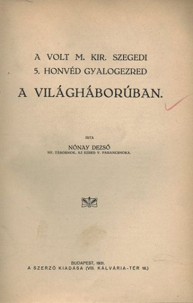
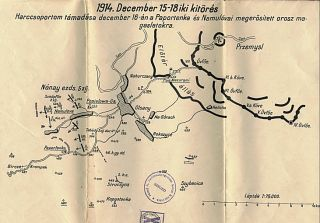
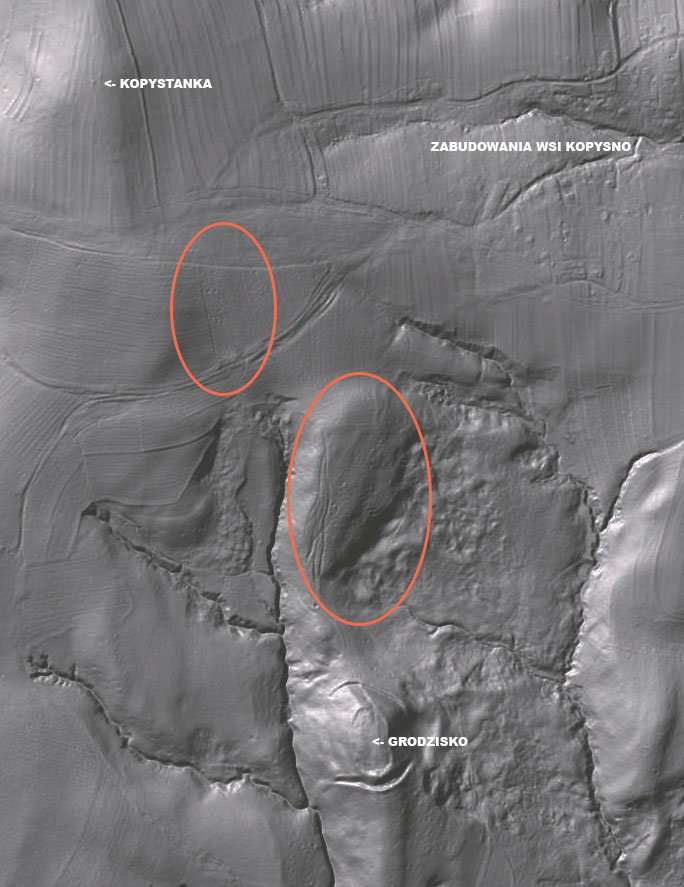
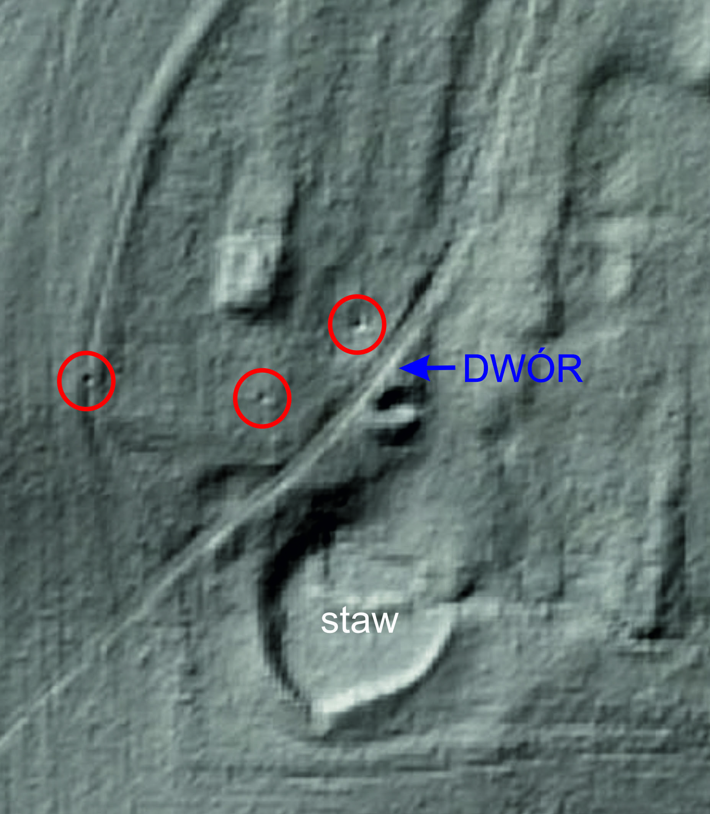

Podczas I wojny światowej na terenie Kopysna oraz wokół wsi prowadzone były działania wojenne, o których wspomina w swej książce Nónay Dezsó (wikipedia.org) oraz Wojciech Gorgosz w książce „Oblężenie i obrona Przemyśla w r. 1914/1915” (www.pbc.rzeszow.pl).

Strona tytułowa książki Nónay Dezsó (bibl.u-szeged.hu)

Mapa z książki Nónay Dezsó
Generał Kusmanek (Hermann Kusmanek von Burgneustädten), komendant twierdzy Przemyśl w celu przeszkodzenia odmarszowi na zachód oddziałom rosyjskim stojącym pod twierdzą, zarządził w dniu 14 grudnia 1914 r. wypad, który obejmował m.in. zajęcie wzgórza "Struczyna", a następnie "Kopystianka" (Kopystanka). Zadanie to otrzymała grupa pułkownika Szatmary, w skład której wchodziło 4 1/2 batalionów, 1 bateria i kilkunastu kawalerzystów. Należy dodać, iż grupa ta musiała się zmierzyć z rosyjską 81 dywizją piechoty, która zajęła tereny na południe od Kopysna.
Ślady walk w rejonie Kopystanki są do dziś widoczne na zdjęciach lidarowych (Light Detection and Ranging). Na poniższym zdjęciu zaznaczono miejsca ostrzału artyleryjskiego c.k. armii.

W czasie walk ucierpiał folwark Tyszkowskich i inne domy w Kopysnie. Z umowy dzierżawy z dnia 1 września 1918 r. zawartej pomiędzy Antonim Jankowskim a zarządcą dóbr Pawła Tyszkowskiego wynika, że dom mieszkalny (dwór) został zniszczony podczas wojny i trzeba było poddać go reparacji. Fakt ten zdają się potwierdzać także zdjęcia lidarowe, na których widać wyraźny lej po pocisku tuż przy zachodniej ścianie dworu.

W innym dokumencie mowa o „budynkach”, które spłonęły. Mogło chodzić o budynki gospodarcze (stodoła, stajnia lub spichrz), które w ramach umowy dzierżawy miał na nowo wznieść Antoni Jankowski na terenie folwarku w Kopysnie.
Część mieszkańców Kopysna brała udział w działaniach wojennych I wojny światowej po stronie cesarstwa austro-węgierskiego. Nie jest jednak znana dokładna liczba tych osób. Z zachowanych dokumentów można dowiedzieć się jedynie o osobach rannych, poległych czy wziętych do niewoli. Wykaz tych osób znajduje się w "Dokumentach do pobrania" na tej stronie [7].
C.k. Namiestnik z powodu szerzącej się pryszczycy, zarządzeniem z dnia 7.08.1911r. wprowadził na terenie całego kraju obostrzenia weterynaryjno-policyjne. Kopysno uznano za obszar zapowietrzony (jbc.bj.uj.edu.pl).
W 1915 roku Kopysno nawiedziła epidemia cholery. Nieznana jest liczba zmarłych. Po tym wydarzeniu pozostał jedynie cmentarz, na który wskazuje do dziś istniejący drewniany krzyż, znajdujący się u stóp Kopystanki (49°40' 55.15" N, 22°37'46.32" E; zob. Ciekawe miejsca).
Z Kopysnem w czasie pierwszej wojny światowej związane jest też pewne zdarzenie opisane przez rosyjskiego pisarza Włodzimierz Bielajewa, autora trylogii "СТАРAЯ КРЕПОСТЬ"* . Pozytywnie oceniając mieszkańców Galicji ustami jednego z bohaterów, wspomina cyt.: "Kiedy Przemyśl dostał się do niewoli, zostałem ciężko ranny i tam, w Galicji ... zostałem leżąc na ziemi, nieprzytomny. (...) Leżałem ponad rok w chłopskiej chacie w wiosce Kopysno. Przywieźli mi potajemnie z Przemyśla lekarza. Operował mnie dwa razy. (...)." Czy opisane zdarzenie rzeczywiście miało miejsce, czy jest to tylko wymysł autora, tego nie wiemy.
* na podstawie tej książki (nagrodzonej w 1951 r. nagrodą Stalina), w 1973 r. nakręcono serial telewizyjny pod tym samym tytułem.